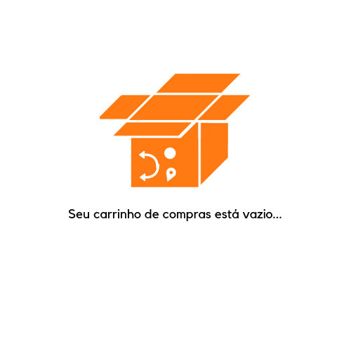

<!--
  Generated template for the CartPage page.

  See http://ionicframework.com/docs/components/#navigation for more info on
  Ionic pages and navigation.
-->
<ion-header>
    <ion-navbar>
      <div class="logo-tobbar">
        
  </div>
  
        <ion-buttons class="search-direct" end>
            <button ion-button icon-only (click)="goToTabsPage3()">
      
              <ion-icon name="search"></ion-icon>
      
            </button>
          </ion-buttons>
    </ion-navbar>
  </ion-header>


<ion-content padding>

        
        

</ion-content>
